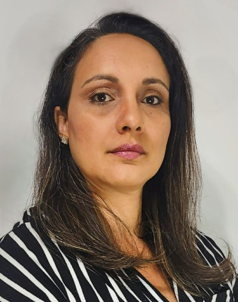

Soraya Skavinski | WDD 130
Hello! My name is Soraya Skavinski and I'm from Brazil.
I live in the cosmopolitan city of São Paulo.
I enjoy learning new things and communicating with people.
I'm studying Web & Computer Programing at BYU-Idaho, and Data Analysis at DNC school.
I've had different professions along my career life, such as:
ESL teacher, receptionist, doctor in Chiropractic and policewoman.
I'm married, have two children, two dogs and a guinea pig.
I'm a Worldwide BYU-Pathway Connect Missionary and team leader at Launching Leaders program
My everyday routine is organized to accomplish my daily activities.
I also take time to relax, watch movies, meditate, listen to good music and exercise.
That's a little about me.